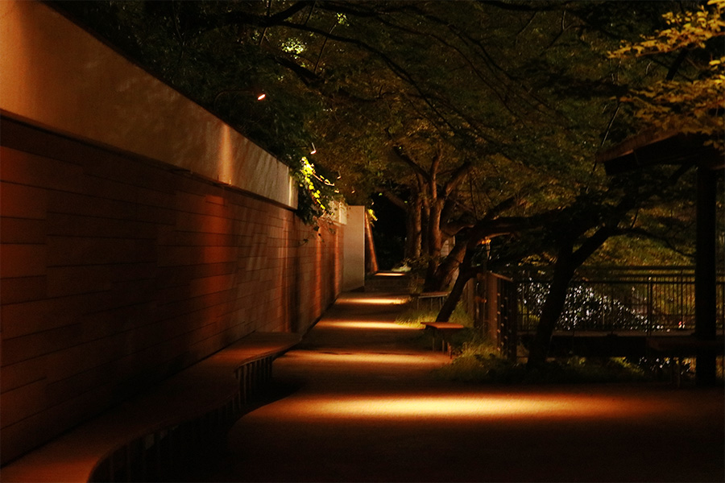

Photo
Story
他に人のいない夜道。
私の足音だけが、こつこつと響いている。
———少し、嫌な感じ。
通る道は朝と同じはずなのに、日が落ちるだけでガラリと印象が変わる。
私は背後になんとなく滲む『嫌な予感』に気を取られながら、早足で前に進んでいく。
コツ、コツ。コツ、コツ。
ふっと、響いている足音が二つに増えた。
私はそろり、と後ろを振り返る。
後ろを歩いていたのは、見覚えのありすぎる顔だった。
私は足を緩め、その人に並ぶ。
「お兄ちゃん！帰ってくるならそう言ってよ！」
私は、今年遠くの大学に入学し、家を出て行った兄にそう話しかけた。
兄が一緒に帰ってくれるなら、もう一安心だ。
私は密かに胸を撫で下ろし、兄の言葉を待つ。
「………ごめんごめん、ちょっとこっちで調べたいことがあってさ」
「ほんのちょっとだけだったから、日帰りであっちに戻るつもりだったんだ」
兄が頭をかきながら、そう弁解する。
「そうなんだ。お母さんにはもう連絡した？」
「してないなら、もしかしたらお兄ちゃんの今日のご飯はないかもよ？」
兄を揶揄うように見上げると、少し驚いた顔をする。
「うわ、しまったな。晩飯のことは考えてなかった」
兄は少し考えこむと、帰り道とはスッと別方向に指を刺した。
「ちょっとコンビニに寄ってっていいか？」
自分の分の晩ご飯を買うということなのだろうか。
別に断る理由もないので、私は兄についていくことにした。
コツ、コツ。こつ、こつ。
私たち以外いない道で、二人分の足音が響く。
コツ、コツ。こつ、こつ。
こつ、こつ。コツ、コツ。
コツ、コツ。こつ、こつ。
こつ、こつ。コツ、コツ。
———何かが、おかしい気がする。
「ねぇお兄ちゃん」
「こっちには、コンビニはないよね？」
私たちが向かっている方向には、確か——————
森しか、ないはずだ。
しかも、かなり深い森で。
「………そう、かもな」
微かな声で肯定が返ってくる。
ゾッと悪寒が走る。
———この人は、誰？
「ねぇお前さ」
“兄”は私にふっと笑いかけた。
目の前の鬱蒼とした森を指差し、“ソレ”は私に告げる。
「俺の妹はさ」
「————10年前、あの森で死んでるんだよ」